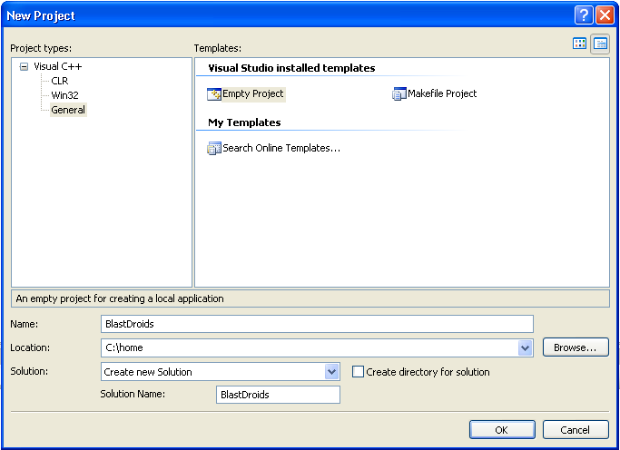
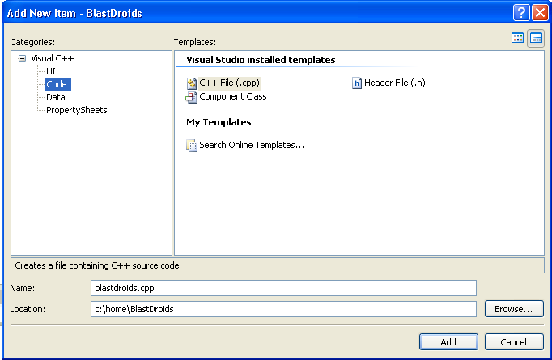
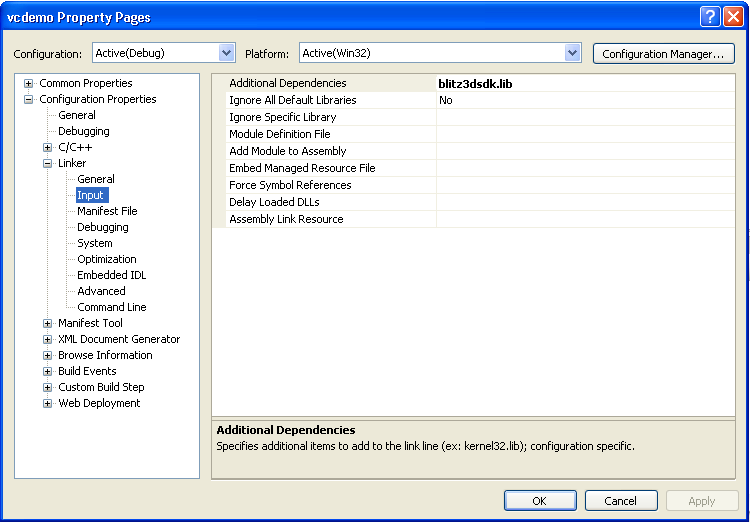

Once VisualC++ is installed you can either create a new project or build on from the examples provided in the Blitz3DSDK VisualStudio directory.
The C++ example project included requires it not be relocated from the sdk without the ../lib and ../include being duplicated also.
To create your own Blitz3DSDK project from scratch the following steps are required:
First create a new C++ Empty Project, in the Express editions this is listed under win32, in the Professional editions the Empty Project is listed under the C++ project types.

The second step is to add a new C++ file to the project. Select Add -> New Item by right clicking on your new projects entry in the Solution Explorer window of Visual Studio or alternatively using the main menu and selecting Project Menu -> Add New Item.

Now using the standard file explorer, copy the blitz3dsdk.h and blitz3dsdk.lib files from the Blitz3DSDK into the newly created project folder.
If the "create directory for solution" option was selected in step 1 the project folder will be a subdirectory of your projects "solution" folder, otherwise the two are one in the same which in this instance is c:/home/BlastDroids.
Once the two files from the blitz3dsdk have been copied to the project folder the project's link properties must be ammended to link with the Blitz3DSDK.
The following illustrates the property pages of a C++ project reachable by selecting the Properties option in the projects context menu in the Solution Explorer frame.
Note the addition of the blitz3dsdk.lib which if you have copied directly into the project folder can be the plain file name without an explicit path.

An additional method to adding linktime objects to your project is to select Add Existing Item from the projects context menu, and after selecting the All Files file filter locating and selecting the blitz3dsdk.lib file.
Finally you are ready to run, copy and paste the source from the next chapter into your blank project.cpp file and select Start from the debug menu to compile and run your new project.